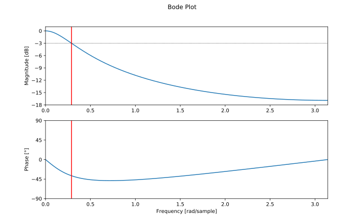

Difference equation
The difference equation of an exponential moving average filter is very simple:
$$ y[n] = \alpha x[n] + (1-\alpha) y[n-1] $$
In this equation, \(y[n]\) is the current output, \(y[n-1]\) is the previous output, and \(x[n]\) is the current
input;
\(\alpha\) is a number between 0 and 1. If \(\alpha = 1\), the output is just equal to the input, and no filtering
takes place.
The filter is called 'exponential', because the weighting factor of previous inputs decreases exponentially.
This can be easily demonstrated by substituting the previous outputs:
$$ \begin{split}
y[n] &= \alpha x[n] + (1-\alpha) y[n-1] \\
&= \alpha x[n] + (1-\alpha) \left(\alpha x[n-1] + (1-\alpha) y[n-2]\right) \\
&= \alpha x[n] + (1-\alpha) \left(\alpha x[n-1] + (1-\alpha) \left(\alpha x[n-2] + (1-\alpha)
y[n-3]\right)\right) \\
& \dots \\
&= \alpha \sum_{k=0}^{n} \left(1-\alpha\right)^{k} x[n-k]
\end{split} $$
Impulse and step response
From the previous equation, we can now easily calculate the impulse and step response.
The impulse response is the output of the filter when a Kronecker delta function is applied to the input.
Recall the definition of the Kronecker delta:
$$ \delta[n] = \begin{cases}
1 & n = 0 \\
0 & n\ne0.
\end{cases} $$
The impulse response of the EMA is
$$ \begin{split}
y_{impulse}[n] &= h[n] \\
&= \alpha \sum_{k=0}^{n} \left(1-\alpha\right)^{k} \delta[n-k] \\
&= \alpha (1-\alpha)^n.
\end{split} $$
For example, if \(\alpha = 0.25\), the impulse response is as follows:

The step response is the output of the filter when a Heaviside step function is applied to the input.
The Heaviside is defined as
$$ H[n] = \begin{cases}
0 & n \lt 0 \\
1 & n \ge 0.
\end{cases} $$
The step response of the EMA is
$$ \begin{split}
y_{step}[n] &= \alpha \sum_{k=0}^{n} \left(1-\alpha\right)^{k} H[n-k] \\
&= \alpha \sum_{k=0}^{n} \left(1-\alpha\right)^{k} \\
&= 1 - \left(1-\alpha\right)^{n+1}.
\end{split} $$
For example, if \(\alpha = 0.25\), the step response is as follows:

Transfer function
The output of discrete-time linear time-invariant (DTLTI) systems, of which the EMA is an example,
can be expressed as the convolution of the input with the impulse response. In other words,
the impulse response describes the behavior of the system, for all possible inputs.
To prove the previous statement, we'll start with the following trivial property:
any signal \(x[n]\) can be expressed as a convolution of the Kronecker delta function with itself, that is
$$ x[n] = x[n] * \delta[n] = \sum_{k=0}^{+\infty} x[k]\ \delta[n-k]. $$
You can easily see that all terms where \(k \ne n\) are zero, because the Kronecker delta is zero in that case.
Only the term for \(k = n\) is non-zero, in which case the Kronecker delta is one, so the result is just
\(x[n]\).
You can also interpret this as the signal being made up of a sum of infinitely many scaled and shifted Kronecker
delta functions.
Let \(T\) be the transformation performed by the DTLTI system, then \(y[n]\)
is the output after applying \(T\) to the input signal \(x[n]\).
The following derivation makes use of the fact that \(T\) is a linear
transformation and that it is time-invariant:
$$ \begin{split}
y[n] &= T\left(x[n]\right) \\
&= T\left(\sum_{k=0}^{\infty} x[k]\ \delta[k-n]\right) \\
&= \sum_{k=0}^{\infty} T\left(x[k]\ \delta[k-n]\right) \\
&= \sum_{k=0}^{\infty} x[k]\ T\left(\delta[k-n]\right) \\
&= \sum_{k=0}^{\infty} x[k]\ h[k-n] \\
&= x[n] * h[n]
\end{split} $$
Since the factor \(x[k]\) is independent of time \(n\), it can be moved outside
of the \(T\) operator. \(T\) applied to the Kronecker delta is (by definition) the impulse response of \(T\),
\(h[n]\), but shifted by \(k\) time steps.
Analysis of such systems is usually easier in the Z-domain, in which the convolution is reduced to a simple
product.
The (unilateral) Z-transform is defined as:
$$ {\cal Z}\{x[n]\} = \sum_{n=0}^{\infty} x[n] z^{-n} $$
If \(X(z) = {\cal Z}\{x[n]\}\), \(Y(z) = {\cal Z}\{y[n]\}\) and \(H(z) = {\cal Z}\{h[n]\}\)
are the Z-transforms of the input, output and impulse response respectively, then:
$$ \begin{split}
{\cal Z}\{y[n]\} &= {\cal Z}\{x[n] * h[n]\} \\
Y(z) &= \sum_{n=0}^\infty x[n] * h[n] z^{-n}\\
&= \sum_{n=0}^\infty \sum_{k=0}^\infty x[k] h[n-k] z^{-n} \\
&= \sum_{k=0}^\infty \sum_{n=0}^\infty x[k] h[n-k] z^{-n + k - k} \\
&= \sum_{k=0}^\infty x[k] z^{-k} \sum_{n=0}^\infty h[n-k] z^{-(n - k)} \\
Y(z) &= X(z) H(z) \\
H(z) &= \frac{Y(z)}{X(z)}
\end{split} $$
\(H(z)\) is called the transfer function of the system.
Let's calculate the transfer function of the EMA.
We can use one of two approaches: use the difference equation and use some of
the properties of the Z-transform to calculate \(\frac{Y(z)}{X(z)}\), or apply
the definition of the Z-transform to the impulse response \(h[n]\) directly.
Using the difference equation
All you have to do is apply the time shifting property of the Z transform:
$$ \forall n_0 \in \mathbb{N}:
{\cal Z}\{y[n-n_0]\} = z^{-n_0}{\cal Z}\{y[n]\} $$
Then just rearrange the terms.
$$ \begin{split}
y[n] &= \alpha x[n] + (1-\alpha) y[n-1] \\
{\cal Z}\{y[n]\} &= {\cal Z}\{\alpha x[n] + (1-\alpha) y[n-1]\} \\
&= \alpha {\cal Z}\{x[n]\} + (1-\alpha) {\cal Z}\{y[n-1]\} \\
&= \alpha {\cal Z}\{x[n]\} + (1-\alpha) z^{-1} {\cal Z}\{y[n]\} \\
Y(z) &= \alpha X(z) + (1-\alpha) z^{-1} Y(z) \\
Y(z) - (1-\alpha) z^{-1} Y(z) &= \alpha X(z) \\
\frac{Y(z)}{X(z)} &= \frac{\alpha}{1 - (1-\alpha) z^{-1}} \\
H(z) &= \frac{\alpha}{1 - (1-\alpha) z^{-1}}
\end{split} $$
Using the impulse response
$$ \begin{split}
H(z) &= {\cal Z}\{h[n]\} \\
&= \sum_{n=0}^{\infty} h[n] z^{-n} \\
&= \alpha \sum_{n=0}^{\infty} (1-\alpha)^n z^{-n} \\
&= \alpha \sum_{n=0}^{\infty} \left(\frac{1-\alpha}{z}\right)^n \\
&= \frac{\alpha}{1 - \frac{1-\alpha}{z}}
\end{split} $$
The last step is only valid if the sum converges,
this is the case for \(\lvert\frac{1-\alpha}{z}\rvert\ \lt 1\).
(See Infinite Geometric Series)
Poles and zeros
In these expressions, \(z\) is a complex variable, and \(H(z)\) is a complex function.
There are a couple of interesting values for \(z\): values that result in the numerator becoming zero, called
zeros,
and values that result in the denominator becoming zero, called poles.
$$ \begin{split}
H(z) &= \frac{\alpha}{1 - \frac{1-\alpha}{z}} \\
&= \frac{\alpha z}{z - (1-\alpha)}
\end{split} $$
By rewriting the transfer function, we can easily see that \(z = 0\) is a zero, and \(z = 1-\alpha\) is a pole.
The poles and zeros determine the overall effect of the transfer function,
so pole-zero plots are a very useful tool when describing filters.
This is the pole-zero plot of the same example EMA as before, with \(\alpha = 0.25\).
 The zero in the origin is indicated by an O, and the pole at \(1-\alpha = 0.75\) by an X.
The zero in the origin is indicated by an O, and the pole at \(1-\alpha = 0.75\) by an X.
Frequency response
An important property of discrete-time linear time-invariant systems is that it preserves the pulsatance (angular
frequency) of sinusoidal signals, only the phase shift and the amplitude are altered.
In other words, sines and cosines are eigenfunctions of DTLTI systems.
This makes it relatively easy to express the frequency response (sometimes called magnitude response) of a filter.
We're interested in the spectrum of frequencies that a signal contains, so it makes sense to decompose it as a sum
of sines and cosines. That's exactly what the discrete-time Fourier transform does:
$$ X_{2\pi}\left(\omega\right) = \sum_{n=-\infty}^{\infty} x[n] e^{-i\omega n} $$
Note that this is just a special case of the Z-transform, where \(z = e^{i\omega}\).
The frequency response of the filter describes how the spectrum of a signal is altered when it passes
through the filter. It relates the spectrum of the output signal \(Y(\omega)\) to the spectrum
of the input signal \(X(\omega)\). We already had an expression for the spectrum of the output divided
by the spectrum of the input, we called it the transfer function \(H(z) = Y(z) / X(z)\).
To get the frequency response of the filter, we can just evaluate the transfer function for \(z = e^{i\omega}\).
Also note that this is the DTFT of the impulse response \(h[k]\).
$$ \begin{split}
{\cal F}_{DTFT}\{h[k]\} &= \sum_{n=-\infty}^{\infty} h[n] e^{-i\omega n} \\
&= H(e^{i\omega}) \\
&= \frac{\alpha}{1 - (1-\alpha) e^{-i\omega}}
\end{split} $$
We can now calculate the amplitude of each frequency component in the output by taking the modulus
of \(H(e^{i\omega})\). For reasons that will become apparent in a minute, we'll calculate the modulus squared.
We use Euler's formula for writing the exponential as a sines and cosines.
$$ \begin{split}
\lvert H(e^{i\omega}) \rvert^2 &= \frac{\alpha^2}{\lvert 1 - (1-\alpha) e^{-i\omega} \rvert^2} \\
&= \frac{\alpha^2}{\lvert 1 - (1-\alpha) \left(\cos(-\omega) + i \sin(-\omega)\right) \rvert^2} \\
&= \frac{\alpha^2}{ (1 - (1-\alpha) \cos(\omega))^2 + ((1-\alpha) \sin(\omega))^2} \\
&= \frac{\alpha^2}{1 - 2 (1-\alpha) \cos(\omega) + (1-\alpha)^2 \cos^2(\omega) + (1-\alpha)^2 \sin^2(\omega)}
\\
&= \frac{\alpha^2}{1 - 2 (1-\alpha) \cos(\omega) + (1-\alpha)^2}
\end{split} $$
\(\omega\) is the normalized pulsatance in radians per sample. You can substitute it with
\(\omega = \frac{2\pi f}{f_s}\) where \(f\) is the frequency in Hertz, and \(f_s\) is the
sample frequency of the system in Hertz.
We can now plot the filter's gain in function of the frequency. These plots often use a logarithmic scale, to
show the gain in decibels. In order to calculate the power gain, the amplitude is squared.
$$ A_{dB}(\omega) = 10\ \log_{10} \lvert H\left(e^{i\omega}\right)\rvert^2 $$
Note that when a frequency is not present in the output signal, the gain will be \(-\infty\ dB\).
If a frequency has an amplitude of one in the output signal, the gain will be \(0\ dB\).
 You can clearly see the low-pass behavior of the EMA: low frequencies have a near-unit gain, and high frequencies
are attenuated.
You can clearly see the low-pass behavior of the EMA: low frequencies have a near-unit gain, and high frequencies
are attenuated.
To get a better understanding of where this curve comes from, we can plot the entire \(\lvert H(z)\rvert\) surface
in the Z-domain.
As mentioned above, the DTFT is just a special case of the Z-transform, where \(z = e^{i\omega}\), i.e. the unit
circle in the complex plane.
Remember that the point \(z = e^{i\omega}\) is a point with a distance of \(1\) to the origin, and with an angle of
\(\omega\ rad\)
between its position vector and the positive x axis.

 The image of the unit circle is shown in blue. Notice that this is the same curve as the blue curve in the
magnitude response graph above:
close to 0 when \(\omega → 0\) (the right half of the circle) and negative when \(\omega → \pi\) (the left half of
the circle).
The image of the unit circle is shown in blue. Notice that this is the same curve as the blue curve in the
magnitude response graph above:
close to 0 when \(\omega → 0\) (the right half of the circle) and negative when \(\omega → \pi\) (the left half of
the circle).
You can clearly see the effect of the pole at \(0.75 + 0i\). The zero in the origin has no effect on the frequency
response,
because it doesn't alter the image of the unit circle, since
\(\lvert e^{i\omega} \rvert = 1\) or \(\log(\lvert e^{i\omega}\lvert) = 0\).
Cutoff frequency
The cutoff frequency is defined as the frequency of the half-power point, where the power gain is a half. It's
often called the \(-3\ dB\)-point,
because \(10 \log_{10}\left(\frac{1}{2}\right) \approx -3.01\ dB\).
To find it, just solve the following equation:
$$ \lvert H\left(e^{i\omega_c}\right) \rvert^2 = \frac{1}{2} $$
$$ \begin{split}
\frac{\alpha^2}{1 - 2 (1-\alpha) \cos(\omega_c) + (1-\alpha)^2} &= \frac{1}{2} \\
\omega_c = \arccos\left(\frac{\alpha^2+2\alpha-2}{2\alpha- 2}\right)
\end{split} $$
For example, if \(\alpha\ = 0.25\), then \(\omega_c = \arccos\left(\frac{23}{24}\right) \approx 0.2897
\frac{rad}{sample} \).
To convert it to a frequency in Hertz, you can multiply \(\omega\) by \(\frac{f_s}{2\pi}\), with \(f_s\) the sample
frequency.
For example, if the sample frequency is \(f_s = 1000\ \frac{samples}{s}\), then \(f =
\arccos\left(\frac{23}{24}\right)\frac{f_s}{2\pi} \approx 46.12\ Hz\).
Plotting the frequency response in Python
We can use the SciPy and Matplotlib modules to plot the frequency response in Python.
from scipy.signal import freqz
import matplotlib.pyplot as plt
from math import pi, acos
import numpy as np
alpha = 0.25
b = np.array(alpha)
a = np.array((1, alpha - 1))
print("b =", b) # Print the coefficients
print("a =", a)
x = (alpha**2 + 2*alpha - 2) / (2*alpha - 2)
w_c = acos(x) # Calculate the cut-off frequency
w, h = freqz(b, a) # Calculate the frequency response
plt.subplot(2, 1, 1) # Plot the amplitude response
plt.suptitle('Bode Plot')
plt.plot(w, 20 * np.log10(abs(h))) # Convert to dB
plt.ylabel('Magnitude [dB]')
plt.xlim(0, pi)
plt.ylim(-18, 1)
plt.axvline(w_c, color='red')
plt.axhline(-3, linewidth=0.8, color='black', linestyle=':')
plt.subplot(2, 1, 2) # Plot the phase response
plt.plot(w, 180 * np.angle(h) / pi) # Convert argument to degrees
plt.xlabel('Frequency [rad/sample]')
plt.ylabel('Phase [°]')
plt.xlim(0, pi)
plt.ylim(-90, 90)
plt.yticks([-90, -45, 0, 45, 90])
plt.axvline(w_c, color='red')
plt.show()
